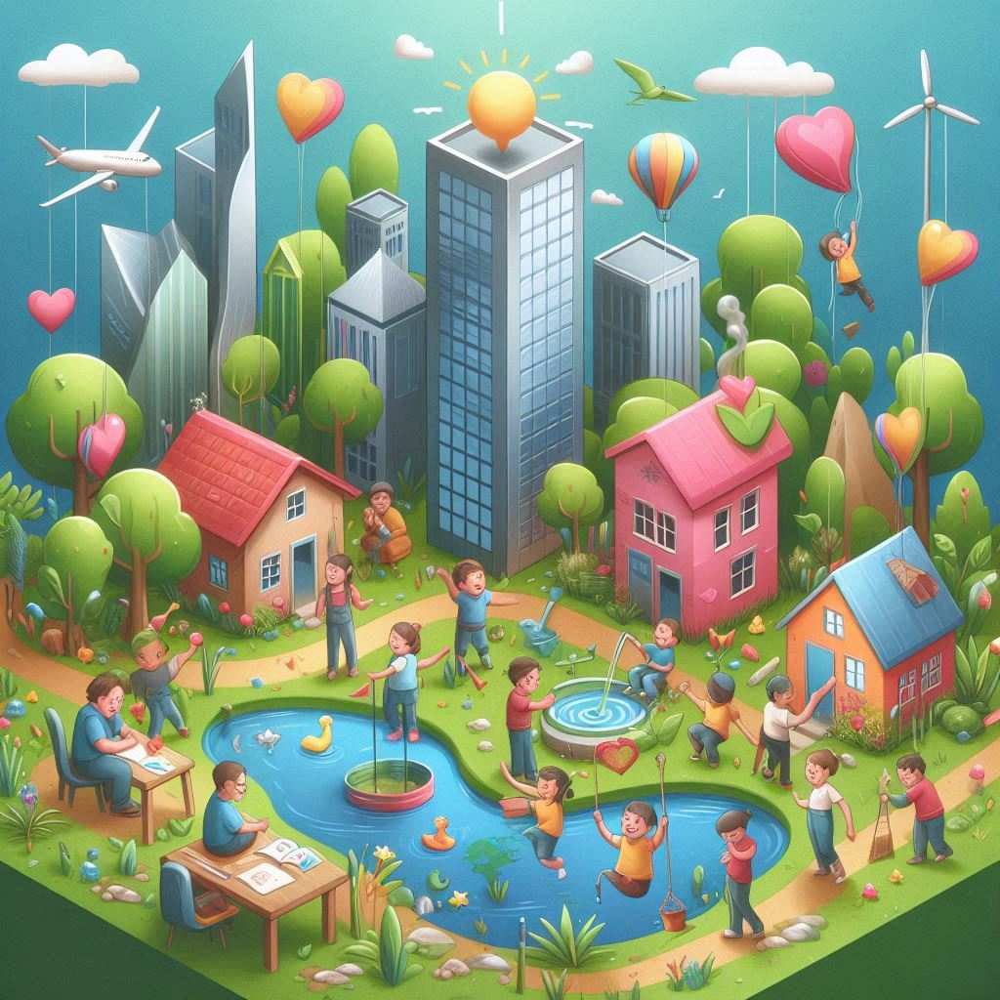

As ações comunitárias têm um impacto profundo na vida das crianças, ajudando a moldar cidadãos mais conscientes e engajados. Quando as crianças participam de atividades comunitárias desde cedo, elas desenvolvem habilidades como comunicação, trabalho em equipe e liderança, além de fortalecerem o senso de pertencimento e responsabilidade social.
Organizações não governamentais (ONGs) desempenham um papel essencial nesse processo, oferecendo acesso à educação, promovendo valores como respeito e empatia, e criando oportunidades para crianças de diferentes origens sociais. Além disso, envolver crianças em atividades solidárias desde a infância contribui para a construção de um futuro mais sustentável e inclusivo, isso é o que o GACC faz!
